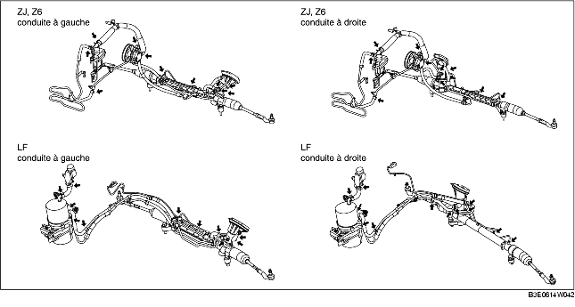

INSPECTION DE LIQUIDE DE DIRECTION ASSISTEE
B3E061432040W01
Inspection du niveau de liquide
1. Vérifier que le niveau de liquide se situe entre les repères MAX et MIN du réservoir de réserve, lorsque le moteur est froid.
-
• Si ce n'est pas le cas, ajuster le niveau de liquide (MIN-MAX sur le réservoir de réserve) en ajoutant/purgeant du liquide.
-
Spécification du liquide
-
ATF M-III ou équivalent (par ex. Dexron®II)
Inspection des fuites de liquide
1. Démarrer le moteur et le faire tourner au ralenti.
2. Tourner complètement le volant à gauche et à droite pour activer la pression du liquide.
-
Attention
-
• Ne pas maintenir le volant de direction complètement tourné pendant 5 secondes ou plus. Il est possible que la température de l'huile augmente, affectant de façon négative la pompe à huile.
3. Rechercher la présence de fuites de liquide aux point indiqués dans l'illustration.

-
• En cas de fuite, réparer les pièces concernées.
Inspection pression de liquide
1. Placer les outils SST en orientant la soupape de l'outil SST vers le carter d'engrenage, comme indiqué dans l'illustration.
2. Débrancher le raccord du côté pompe à huile du flexible de pression, brancher les outils SST placés à l'étape 1.
-
Couple de serrage
-
29,4-44,1 N·m {3,00-4,49 kgf·m, 21,6-32,5 ft·lbf}
3. Purger l'air du système.
4. Ouvrir complètement la vanne du manomètre.
5. Démarrer le moteur, tourner le volant de direction vers la gauche et vers la droite pour faire monter le liquide de direction assistée à la température adéquate (50-60 °C {122-140°F}).
6. Fermer complètement la soupape de la jauge.
7. Faire monter le régime du moteur jusqu'à 1 000-1 500 tr/mn, puis mesurer la pression de liquide engendrée par la pompe à huile.
-
• Si la valeur mesurée est inférieure à la limite inférieure spécifiée, remplacer la pompe à huile dans son ensemble.
-
Attention
-
• Ne pas maintenir la soupape de jauge complètement fermée pendant plus de 5 secondes. Il est possible que la température de l'huile augmente, affectant de façon négative la pompe à huile.
-
Pression de liquide de pompe à huile (température d'huile de 50-60 °C {122-140 °F})
-
ZJ, Z6: 8,5-9,0 MPa {87-91 kgf/cm2, 1235-1305 psi}
-
LF : 10,4-11,0 MPa {107-112 kgf/cm2, 1509-1595 psi}
8. Ouvrir complètement la oupape de jauge, et faire monter le régime du moteur jusqu'à 1 000-1 500 tr/mn.
9. Tourner complètement le volant à gauche et à droite, puis mesurer la pression de liquide au niveau du carter de transmission.
-
Attention
-
• Ne pas maintenir le volant de direction complètement tourné pendant 5 secondes ou plus. Il est possible que la température de l'huile augmente, affectant de façon négative la pompe à huile.
-
Remarque
-
• Si la pression du liquide est inférieure à la limite inférieure spécifiée, il est possible que le pompe à huile ou le carter d'engrenage ne fonctionnent pas correctement. Remplacer la pompe à huile dans son ensemble.
-
Pression de liquide de carter d'engrenage (température d'huile de 50-60 °C {122-140 °F})
-
ZJ, Z6: 7,6-9,0 MPa {78-91 kgf/cm2, 1103-1305 psi}
-
LF : 9,0-11,0 MPa {92-111 kgf/cm2, 1306-1585 psi}
10. Après avoir déposé les outils SST, serrer le raccord côté pompe à huile du flexible de pression au couple spécifié.
-
Couple de serrage
-
29,4-44,1 N·m {3,00-4,49 kgf·m, 21,6-32,5 ft·lbf}
11. Purger l'air du système.